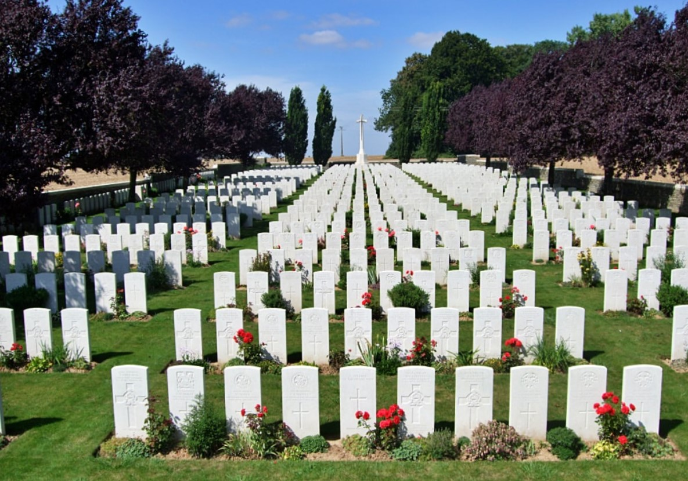
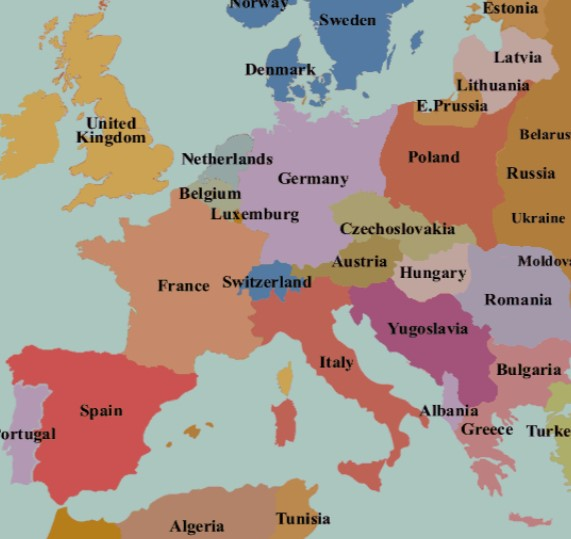

Impacts
Introduction
The First World War was a global conflict with a tremendous impact on the world, some of which can still be felt today. This page will go over some of the various impacts of The Great War.
Loss of Lives
WW1 was a tragic conflict. There were 40 million casualties in WW1, including 20 million deaths. Many towns were completely depleted of all people. Never before was there a war in Europe that took so many lives in just 4 years. Millions of young men were sent to die in futile frontal assaults against entrenched machine guns. Thousands of soldiers died from toxic gas attacks. Many families were destroyed. Some soldiers simply dissapeared and never seen again.
From https://www.ww1cemeteries.com/savy-british-cemetery.html
Death of Empires
4 Empires have ended due to WW1. WW1 weakened the Russian Empire and allowed the communists to take over. The Treaty of Brest-Litovsk fragmented Russia and it took years for the Soviets to take back some of the land. The Ottoman Empire was destroyed and replaced with Turkey. The Austro-Hungarian empire had the most tragic fate. The Empire was split into dozens of pieces. Austria would never gain those lands ever again. Finally, the German Empire was ended. After the defeat in WW1, Germany had revolts and the Kaiser (emperor) was removed and Germany turned into a democracy. Some German land was divided up by neighbouring countries. These massive changes in the balance of power let new nations rise...
From https://www.nationalarchives.gov.uk/pathways/firstworldwar/maps/europe1919.htm
Rise of Nations
With the death of many of the old Empires of the Victorian Era came the birth of new Great Powers. Following the War, the United states became
a Great Power. Europe was ravaged by war and the United States was untouched. The USA gained significant prestige from saving the Entente from
defeat against the Central Powers. WW1 was the first step for the USA to become the global superpower and hegemon we know today.
The war also gave rise to the Japanese Empire. Due to the blockades of Great Britain and the intensity of the war in Europe, Germany did not put
much attention in its colonies in Asia. This allowed the Japanese Empire to easily seize German colonies such as the Marshal Islands and Qingdao.
China also gained the opportunity to take back some of the land Germany took, such as the German section of the Tianjin concession. Japan before
WW1 was already powerful, but with the death of old Empires, Japan was finally elevated to Great Power status.
WW1 also gave rise to the USSR. WW1 allowed the Russian empire to fall and be reborn under the Soviet Union. While the USSR initially was just as
backwards and weak as Russia, the USSR was eventually able to become one of the world's first superpowers after WW2.
Technology
War is when human technological progress is the fastest. During WW1, significant technological progress had been made in both civilian and military aspects. Some of these improovements include:
- Radio Broadcasting - Radio became mainstream in civilian life and entertainment
- Cars - Motorized vehicles were of higher quality, were produced faster, and became cheaper
- Artillery - Artillery became larger, more accurate, more efficient, and more powerful
- Guns - Infantry weapons were heavily improoved and new ones were invented, like the submachinegun
- Medicine - The amount of soldiers being wounded in battle increased the medical knowledge doctors have
- Industrial Technology - Factories became more powerful and efficient
- Aircraft - Planes became much faster and better overall. They also became more mainstream for civilian ussage
- Tanks - Tanks were a critical part of every war since they were invented in WW1
From https://en.wikipedia.org/wiki/Cars_in_the_1920s#/media/File:Ford_1921.jpg
The Second World War
The First World War is directly responcible for the Second World War. After the defeat of the Central Powers, the terms of defeat were
harsh. Germany had to pay massive amounts of reperations, had to give up some of their core territories, and were unable to field an army.
Alsasce-Lorraine, an ethnically german and german-speaking state, was retaken by France. The polish coridor, another ethnically german and
german-speaking area, was given to Poland. The Sudentland, an ethnically german and german-speaking area, was given to Czechslovakia.
The new Germany was weak, humiliated, and had soaring high inflation. The people were angry and wanted Germany to be great again. Adolf Hitler
abused this opportunity to convince the German people to follow him on a path to glory... only to be lead to a war far larger than
WW1 with unimaginable horrors.